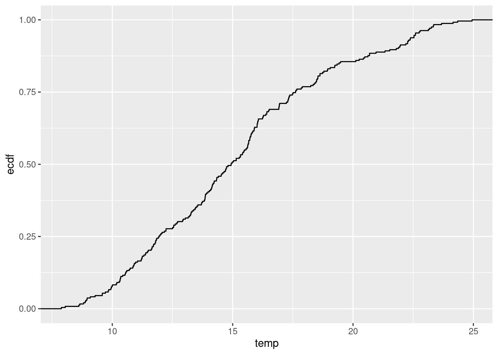
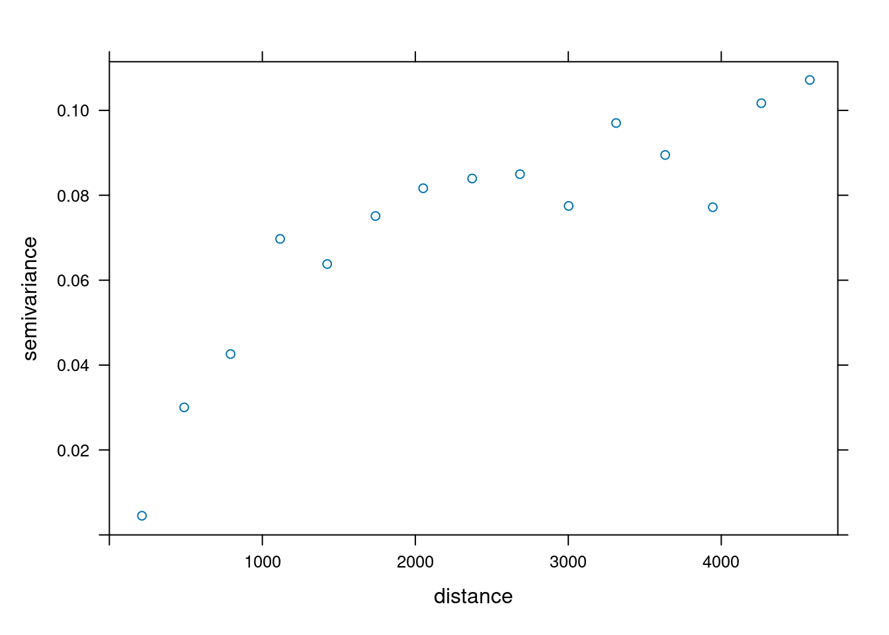
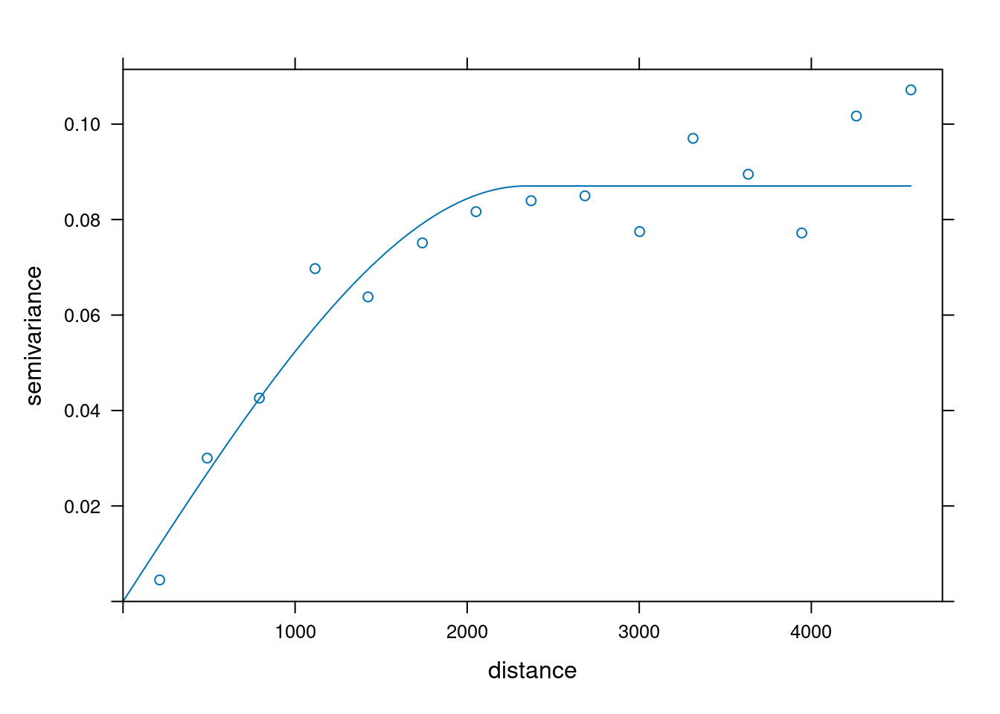
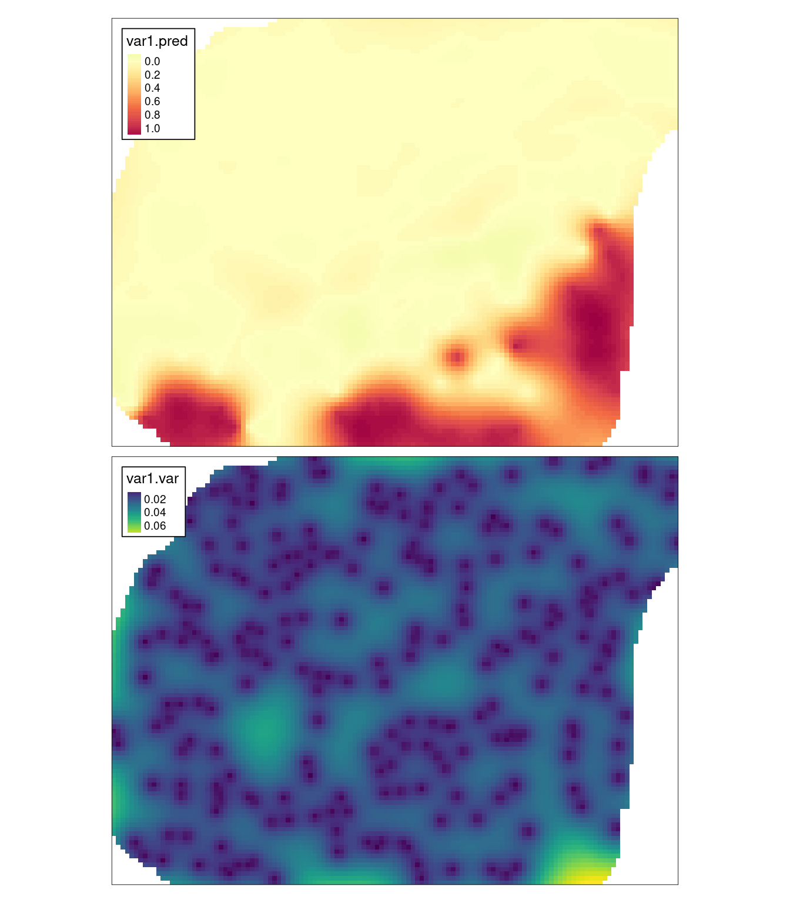
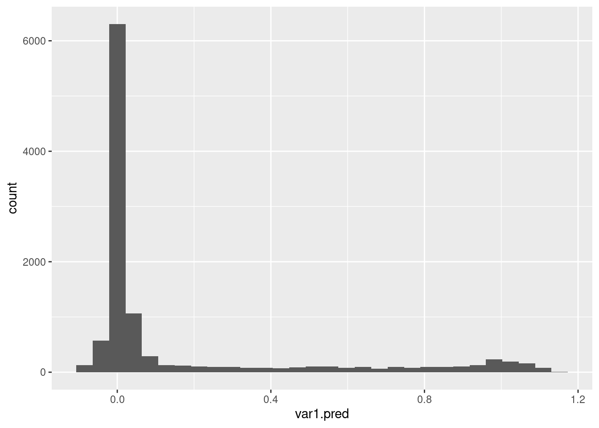
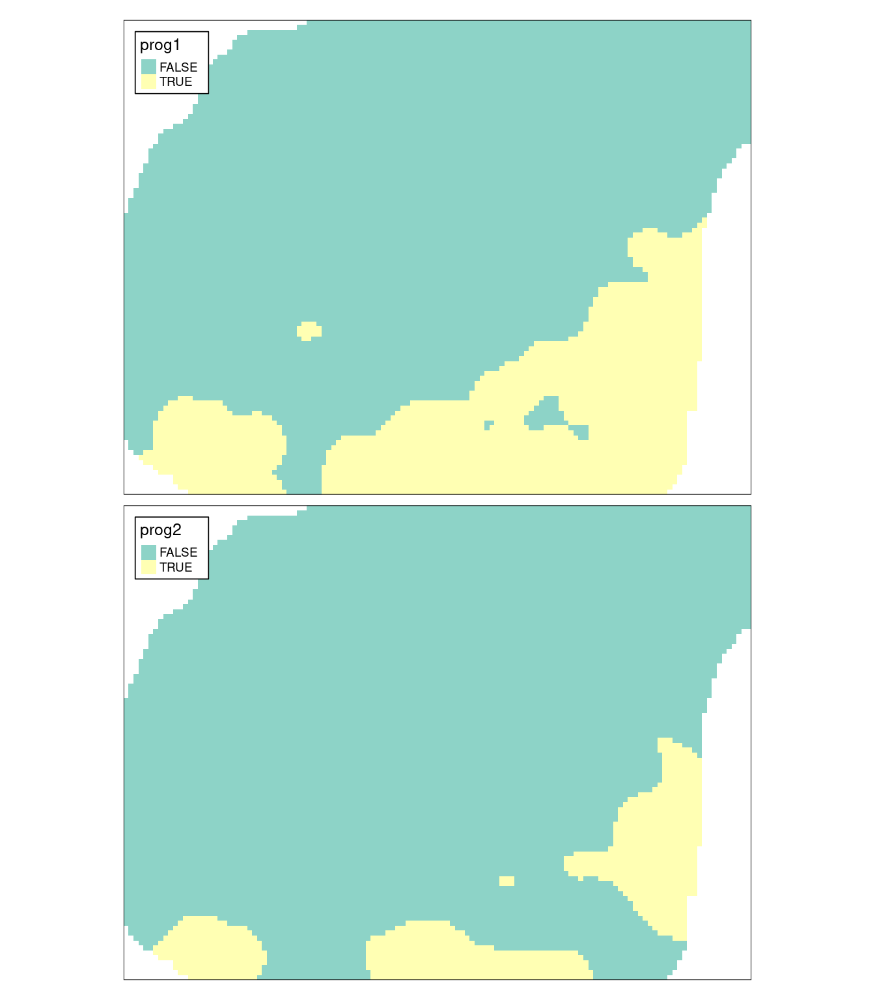
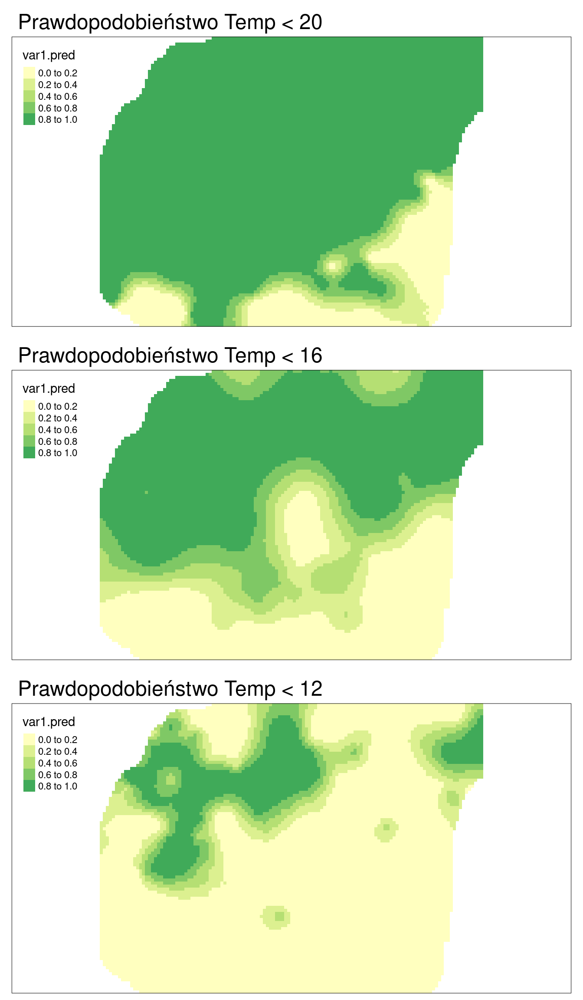

11 Estymacja lokalnego rozkładu prawdopodobieństwa
Odtworzenie obliczeń z tego rozdziału wymaga załączenia poniższych pakietów oraz wczytania poniższych danych:
library(sf)
library(stars)
library(gstat)
library(tmap)
library(ggplot2)
library(geostatbook)
data(punkty)
data(siatka)11.1 Kriging danych kodowanych
11.1.1 Kriging danych kodowanych (ang. Indicator kriging)
Kriging danych kodowanych to metoda krigingu oparta o dane kategoryzowane lub też dane przetworzone z postaci ciągłej do binarnej. Jest ona zazwyczaj używana jest to oszacowania prawdopodobieństwa przekroczenia zdefiniowanej wartości progowej, może być również używana do szacowania wartości z całego rozkładu. Wartości danych wykorzystywane do krigingu danych kodowanych są określone jako 0 lub 1, co reprezentuje czy wartość danej zmiennej jest powyżej czy poniżej określonego progu.
11.1.2 Wady i zalety krigingu danych kodowanych
Zalety:
- Możliwość zastosowania, gdy nie interesuje nas konkretna wartość, ale znalezienie obszarów o wartości przekraczającej dany poziom.
- Nie jest istotny kształt rozkładu.
Wady:
- Potencjalnie trudne do modelowania semiwariogramy (szczególnie skrajnych przedziałów).
- Czasochłonność/pracochłonność.
11.2 Przykłady krigingu danych kodowanych
11.2.1 Binaryzacja danych
Pierwszym krokiem w krigingu danych kodowanych jest stworzenie zmiennej binarnej.
Na poniższym przykładzie tworzona jest nowa zmienna temp_ind.
Przyjmuje ona wartość TRUE (czyli 1) dla pomiarów temperatury wyższych niż 20 stopni Celsjusza, a dla pomiarów równych i niższych niż 20 stopni Celsjusza jej wartość wynosi FALSE (czyli 0).
summary(punkty$temp)## Min. 1st Qu. Median Mean 3rd Qu. Max.
## 7.883 11.953 14.937 15.223 17.584 24.945
punkty$temp_ind = punkty$temp > 20
summary(punkty$temp_ind)## Mode FALSE TRUE
## logical 207 35W przykładzie, próg został wyznaczony arbitralnie. Istnieje oczywiście szereg innych możliwości wyznaczania progu. Można wykorzystać wiedzę zewnętrzną (np. toksyczne stężenie analizowanej substancji) lub też posłużyć się wykresem dystrybuanty do określenia istotnej zmiany wartości (rycina 11.1).

Rycina 11.1: Dystrybuanta zmiennej temp.
11.2.2 Modelowanie
Tworzenie i modelowanie semiwariogramu empirycznego w krigingu danych kodowanych wygląda tak samo jak, np. w przypadku krigingu zwykłego (ryciny 11.2 i 11.3).
Korzystając z funkcji variogram() tworzony jest semiwariogram empiryczny, używając vgm() tworzony jest model “ręczny”, który następnie jest dopasowywany z użyciem funkcji fit.variogram().

Rycina 11.2: Semiwariogram empiryczny binarnej zmiennej.
model_ind = vgm(model = "Sph", nugget = 0.01)
fitted_ind = fit.variogram(vario_ind, model_ind)
fitted_ind## model psill range
## 1 Nug 0.00000000 0.000
## 2 Sph 0.08703823 2342.636
plot(vario_ind, model = fitted_ind)
Rycina 11.3: Model semiwariogramu empirycznego binarnej zmiennej.
11.2.3 Estymacja
Ostatnim etapem jest stworzenie interpolacji geostatystycznej z pomocą funkcji krige.
Wymaga ona czterech argumentów - wzoru (temp_ind ~ 1), zbioru punktowego (punkty), siatki do interpolacji (siatka) oraz modelu (fitted_ind).
ik = krige(temp_ind ~ 1,
locations = punkty,
newdata = siatka,
model = fitted_ind)## [using ordinary kriging]W wyniku estymacji otrzymuje się mapę przestawiającą prawdopodobieństwo przekroczenia zadanej wartości (w tym wypadku jest to 20 stopni Celsjusza) oraz uzyskaną wariancję estymacji (rycina 11.4).
tm_shape(ik) +
tm_raster(col = c("var1.pred", "var1.var"),
style = "cont",
palette = list("-Spectral", "viridis")) +
tm_layout(legend.frame = TRUE)
Rycina 11.4: Estymacja i wariancja estymacji używając metody krigingu danych kodowanych (IK).
11.2.4 Tworzenie mapy binarnej
Mapy przestawiające prawdopodobieństwo można też przetworzyć do postaci map binarnych poprzez użycie wybranej wartości progowej. Rozkład wartości prawdopodobieństwa jest możliwy do zobaczenia, np. używając histogramu (rycina 11.5).
ik_df = as.data.frame(ik)
ggplot(ik_df, aes(var1.pred)) + geom_histogram()
Rycina 11.5: Rozkład wartości estymacji używając metody krigingu danych kodowanych (IK).
Następnie można stworzyć nową zmienną binarną w oparciu o wartości estymacji.
Poniższy kod tworzy dwie nowe zmienne - prog1, gdzie wartość progowa została arbitralnie ustalona na 0.1 oraz prog2 z wartością progową 0.75.
ik$prog1 = ik$var1.pred > 0.1
ik$prog2 = ik$var1.pred > 0.75W wyniku otrzymuje się binarne mapy, dla których stwierdza się obszary powyżej lub poniższej zadanego prawdopodobieństwa (rycina 11.6).

Rycina 11.6: Binarne mapy dla progu ustalonego na 0.1 oraz 0.75.
11.2.5 Alternatywne użycie funkcji
Alternatywnie, zamiast tworzenia nowej zmiennej (takiej jak temp_ind), można wykorzystać funkcję I.
Z jej użyciem można definiować przyjęte progi bezpośrednio do funkcji variogram i krige.
Na poniższych przykładach w ten sposób ustalono trzy progi - poniżej 20, poniżej 16, oraz poniżej 12 stopni Celsjusza (rycina 11.7).
vario_ind20 = variogram(I(temp < 20) ~ 1, locations = punkty)
fitted_ind20 = fit.variogram(vario_ind20,
vgm("Sph", nugget = 0.01))
vario_ind16 = variogram(I(temp < 16) ~ 1, locations = punkty)
fitted_ind16 = fit.variogram(vario_ind16,
vgm("Sph", nugget = 0.03))
vario_ind12 = variogram(I(temp < 12) ~ 1, locations = punkty)
fitted_ind12 = fit.variogram(vario_ind12,
vgm("Sph", nugget = 0.03))
ik20 = krige(I(temp < 20) ~ 1,
locations = punkty,
newdata = siatka,
model = fitted_ind20,
nmax = 30)## [using ordinary kriging]
ik16 = krige(I(temp < 16) ~ 1,
locations = punkty,
newdata = siatka,
model = fitted_ind16,
nmax = 30)## [using ordinary kriging]
ik12 = krige(I(temp < 12) ~ 1,
locations = punkty,
newdata = siatka,
model = fitted_ind12,
nmax = 30)## [using ordinary kriging]
Rycina 11.7: Estymacje używając metody krigingu danych kodowanych (IK) dla różnych progów prawdopodobieństwa.
11.3 Zadania
Zadania w tym rozdziale są oparte o dane z obiektu punkty_ndvi.
data(punkty_ndvi)- Używając obiektu
punkty_ndvistwórz nowe zmienne określające czy zmiennandvima wartość:- poniżej 0.3
- pomiędzy 0.3 a 0.5
- powyżej 0.5
- Poczytaj na temat tego wskaźnika. Co mogą oznaczać powyższe przedziały?
- Korzystając z trzech powyższych przedziałów stwórz mapy prawdopodobieństwa. W jaki sposób można zinterpretować trzy uzyskane mapy?
- Używając wybranego progu prawdopodobieństwa, stwórz trzy mapy binarne.
- (Dodatkowe) połącz trzy mapy binarne w jedną mapę pokazującą uproszczone pokrycie terenu.